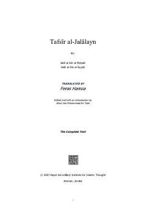

TAQur'oni Karimning eng mashhur va ixcham klassik tafsir kitobi.
Ushbu asar Jaloliddin al-Mahalliy va Jaloliddin as-Suyutiy tomonidan yozilgan Qur'oni Karimning eng mashhur va ixcham tafsirlaridan biridir. Kitob Qur'on oyatlarining ma'nolarini tushunishni osonlashtirish uchun mo'ljallangan bo'lib, islom olamida klassik tafsir ilmi bo'yicha asosiy qo'llanma hisoblanadi.